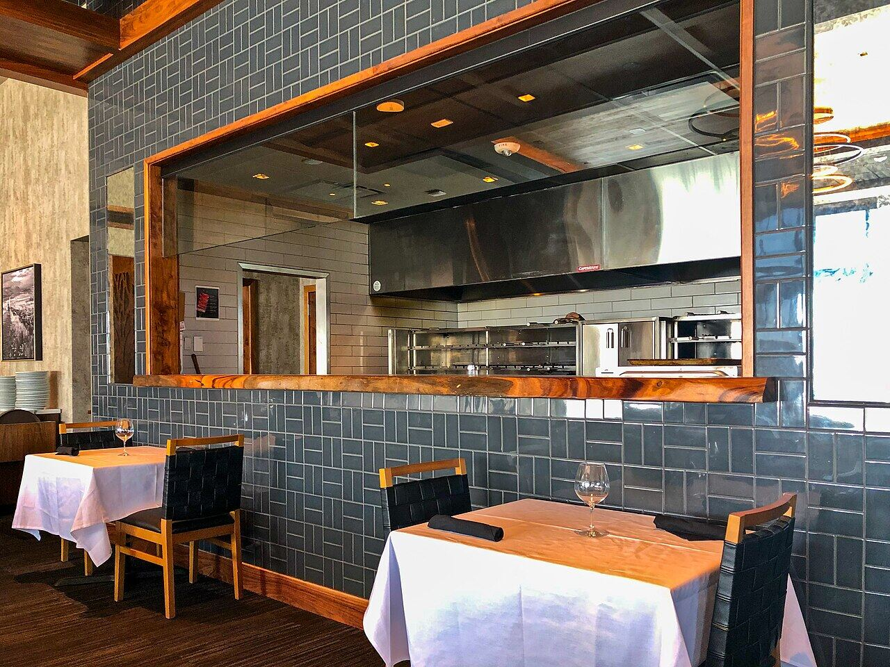
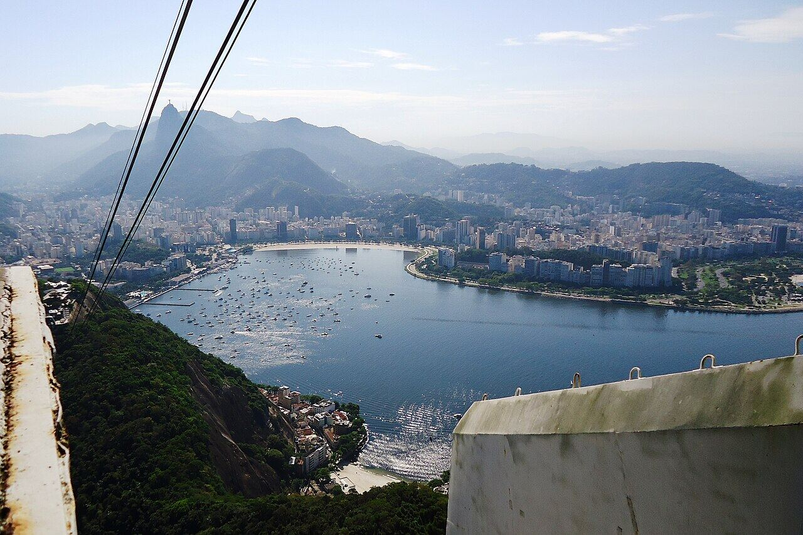

Fogo de Chão de Botafogo
Botafogo
Jantar com vista para o Pão de Açúcar iluminado.
Nosso comentário
A churrascaria fica na enseada de Botafogo, com janelões voltados para o Pão de Açúcar. À noite, com o morro iluminado e o reflexo na água, o jantar ganha um cenário especial.
Dicas
- Peçam mesa junto à janela ao reservar.
- Combina com um dia de passeio na Urca.
Combina com
- Pão de Açúcar de dia
Fotos do lugar

